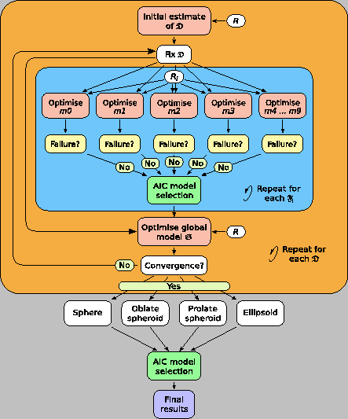

Next: The new model-free optimisation Up: Model-free analysis Previous: The methodology of Mandel Contents Index
Ever since the original Lipari and Szabo papers (Lipari and Szabo, 1982b,a), the question of how to obtain the model-free description of the system has followed the route in which the diffusion tensor is initially estimated. Using this rough estimate, the model-free models are optimised for each spin system i, the best model selected, and then the global model
of the diffusion model
 with each model-free model
with each model-free model
 is optimised. This procedure is then repeated using the diffusion tensor parameters of
as the initial input. Finally the global model is selected. The full protocol, when combined with AIC model selection (d'Auvergne and Gooley, 2003), is illustrated in Figure 7.2.
is optimised. This procedure is then repeated using the diffusion tensor parameters of
as the initial input. Finally the global model is selected. The full protocol, when combined with AIC model selection (d'Auvergne and Gooley, 2003), is illustrated in Figure 7.2.
|
 |
Again this protocol is not implemented in the relax sample scripts. This would have to be implemented in exactly the same manner as described in the previous section, but using the AIC model selection build into relax. Constructing this set of scripts, or a single master script, would be much easier than the Mandel et al. (1995) protocol as Modelfree4 would not need to be used, and the handling of F-tests and chi-squared tests is avoided.